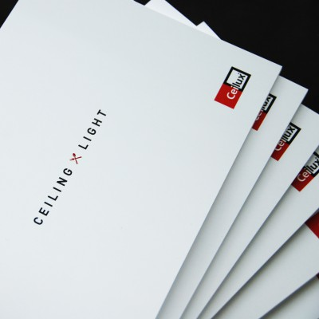

Inspiratie nodig?
Voor elke culinaire werkplek creëert Ceilux een passende oplossing voor uw plafond en verlichting met oog voor efficiëntie en duurzaamheid. Vraag het inspiratieboekje nu aan via info@ceilux.com.